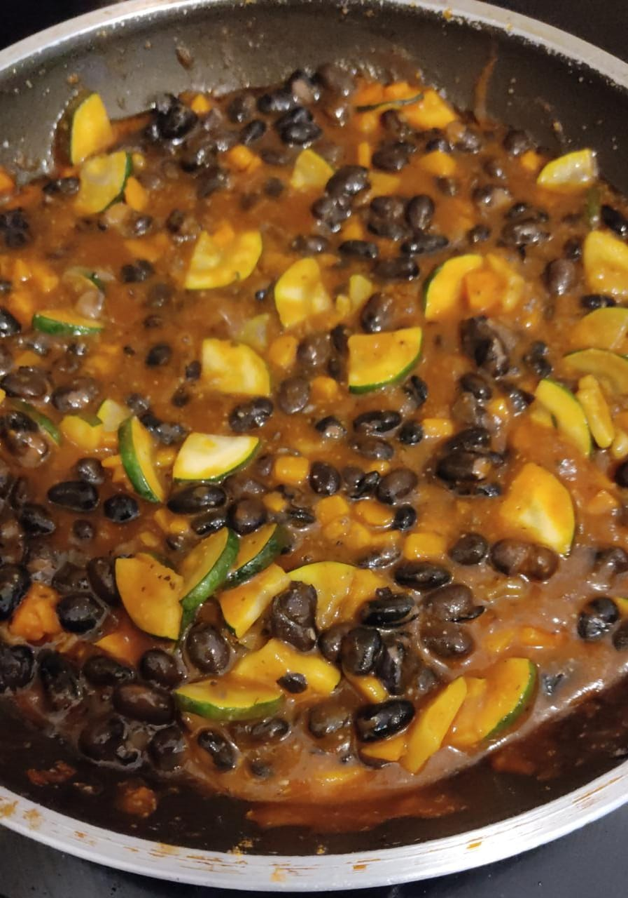

Ou Beans

Description
Delicious meal for any ocassion, a delightful and very simple to cook
Ingredients
- 3 potatoes
- 1 onion
- 4 garlics
- 1 bean can, of your like
- 1 zuchinni
- 250ml tomato sauce
- 1 teaspoon of Pepper
- 1/2 teaspoon of Turmeric
Steps
- Chop the potatoes in small cubes first, when you are done with it,put them to fry, a few minutes later add the turmeric and mix
- Chop the onion and added to the potatos on fire, keep mixing during all the cook time
- Then chop the rest of the veggies
- Start adding the garlic to cook, then when they are almost done, add the zuchinni
- When all looks almost cooked, add the beans and tomato sauce
- At the end add the pepper
Home